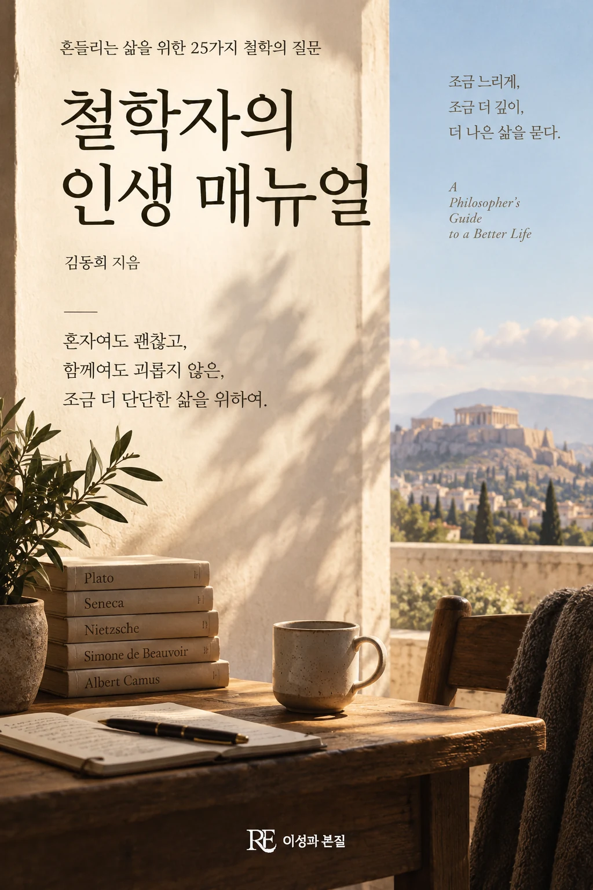

혼자 있으면 외롭고 함께 있으면 괴로운 이들을 위한 25가지 처세술

쇼펜하우어, 니체, 사르트르, 에리히 프롬. 어려운 이론은 빼고 지혜만 골라 담은, 사는 게 뜻대로 되지 않고 인간관계가 피곤한 이들을 위한 삶의 공략집.
쇼펜하우어, 니체, 사르트르, 에리히 프롬. 어려운 개념 대신 삶에 실제로 쓸 수 있는 지혜만 골라, 혼자여도 외롭고 함께여도 괴로운 이들을 위한 25가지 처세의 기술로 정리했습니다.
철학을 처음 접하는 독자, 인간관계와 고독에 대한 실용적 통찰을 원하는 독자.
도서목록으로 돌아가기